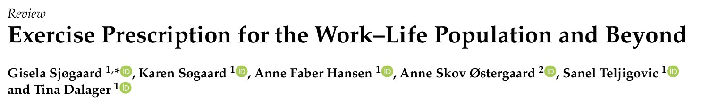
🔖原文标题（J Funct Morphol Kinesiol 2023;8:73，开放获取）
📚 文献信息
▪ Sjøgaard G, Søgaard K, Hansen AF, Østergaard AS, Teljigovic S, Dalager T. Exercise Prescription for the Work–Life Population and Beyond. J Funct Morphol Kinesiol. 2023;8(2):73.
▪ 作者主要来自南丹麦大学运动科学与临床生物力学系，另一位来自丹麦能源公司 Ørsted
▪ 综述（概念介绍 + 操作方案），DOI：10.3390/jfmk8020073
门诊里颈肩痛、腰痛的上班族，很多都听过“多运动”这句建议。可“多运动”具体是什么？天天坐办公室的人，和在工地扛东西的人，需要的显然不是同一种运动。
丹麦这个团队做了二十多年职场运动干预，前后 20 多项随机对照试验、4000 多名员工。他们把经验整理成一套叫 IPET（Intelligent Physical Exercise Training，智能体能训练）的方案：每周 1 小时，按工作类型和个人身体情况来分配练什么、练多久。这篇文章就是这套方案的完整“说明书”，从评估、分配算法、强度进阶到具体动作都有。
背景数据也挺扎心：北欧国家 60%～70% 的人达不到 WHO 推荐的活动量；成年人醒着的时间差不多一半花在工作和通勤上；而肌肉骨骼疾病是缺勤、提前离开劳动力市场和伤残生活年数的头号原因。
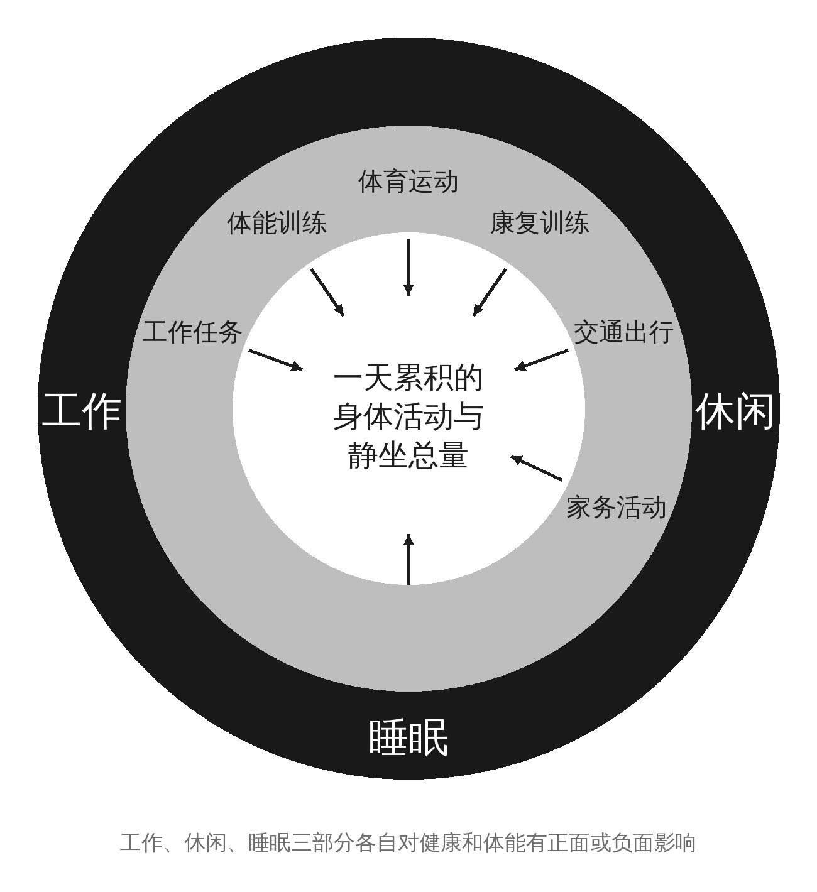
🔖原文图 1 一天的身体活动由工作、休闲、睡眠三部分构成（中文重绘）
作者强调要把一天当作整体看：坐了一整天的人需要动起来，干了一整天重活的人则需要“练得更强”来扛住工作负荷，同时也要留出恢复。
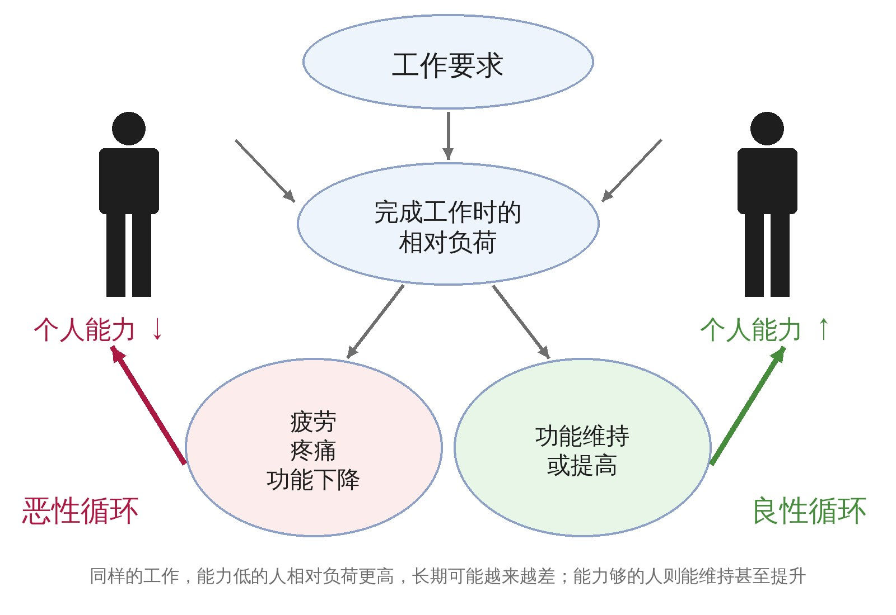
🔖原文图 2 恶性循环与良性循环（中文重绘）
这张图是整个方案的理论基础。同样搬 20 公斤的箱子，力量大的人只用了一小部分能力，力量小的人可能已经接近极限。相对负荷长期偏高，就会疲劳、疼痛、功能下降，能力进一步变差，形成恶性循环。反过来，能力够了，工作反而成了一种维持体能的刺激。
所以 IPET 的目标不是让人去“消耗”，而是把能力练上去，让工作负荷变得相对轻松。
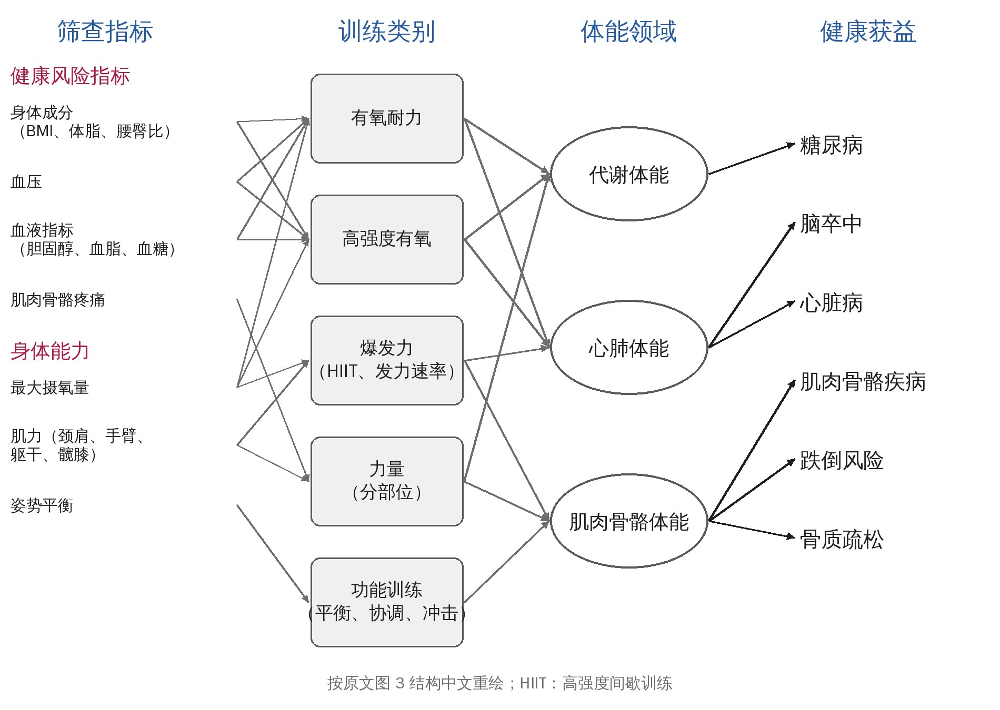
🔖原文图 3 从筛查指标到训练类别、体能领域和健康获益（中文重绘）
不同的问题对应不同的“药”：血压、血糖、体重这类指标对应有氧训练；某个部位疼或力量差，对应该部位的力量训练；平衡差就加功能训练。作者的比喻很形象——没有一种药能治所有病，剂量也要合适。
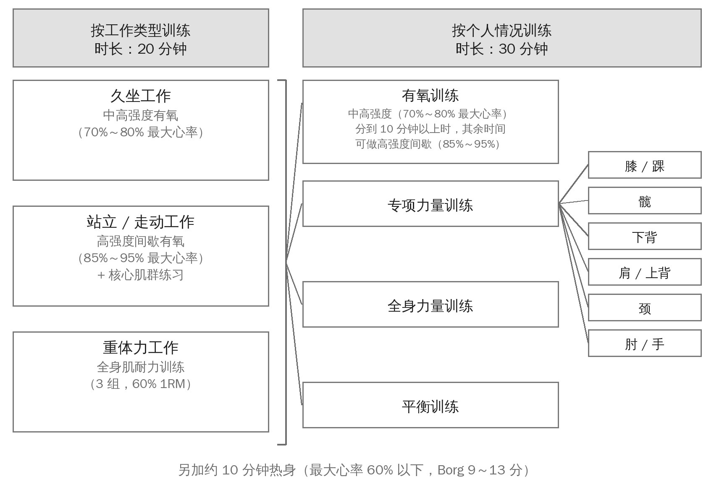
🔖原文图 4 IPET 每周 1 小时的结构（中文重绘）
结构很简单：热身约 10 分钟，然后 20 分钟 按工作类型练，30 分钟 按个人情况练。
• 久坐工作（办公室、实验室、司机）：20 分钟中高强度连续有氧
• 站立/走动工作（保洁、护士、园丁）：高强度间歇有氧，外加核心训练
• 重体力工作（建筑、制造、消防）：全身肌耐力训练，3 组、60% 1RM
个人那 30 分钟，按 5 分钟为单位，从有氧、专项力量（6 个部位）、全身力量和平衡训练里挑，具体由下面的评估结果决定。
作者给了两套评估方式：问卷和自测就够用，有条件的可以做更精确的客观测试。
表 1 各项评估对应的训练类别
| 评估项目 | 自评 / 自测方法 | 进阶方法 | 对应训练 |
|---|---|---|---|
| 工作类型 | 问卷 | 现场观察 | 久坐→有氧；站立走动→有氧 + 核心；重体力→全身力量 |
| 心肺耐力 | 有氧能力自评 | 次极量或极量摄氧量测试 | 有氧训练 |
| 肌力 | 力量自评 | 颈伸、耸肩、肩外展、躯干屈伸、腿屈伸、握力 | 全身力量或对应部位的专项力量 |
| 平衡 | 单腿站立测试 | — | 功能训练 |
| 身体成分 | BMI、腰臀比 | 体脂率 | 有氧训练 |
| 血压、血糖、胆固醇 | — | 血压计、空腹抽血 | 有氧训练 |
| 肌肉骨骼疼痛 | 肘/手、颈、肩/上背、下背、髋、膝/踝 6 个部位 | — | 对应部位的专项力量 |
🔖按原文表 1 的勾选矩阵整理
表 2 分配训练的切点
| 项目 | 方法 | 切点（超过即分配训练） |
|---|---|---|
| 工作类型 | 自评：主要工作的体力要求？①久坐、不需要体力 ②主要站着或走动 ③站立走动，偶尔搬抬 ④繁重或节奏快、很累 | ①久坐；②站立/走动；③④重体力 |
| 心肺耐力 | 自评：和同龄同性别的人比，你的有氧能力打几分（0～10）？ | 低于 5 分 → 加有氧 |
| 测相对最大摄氧量（ml/kg/min） | 女：20～29 岁 ≤34，30～39 ≤33，40～49 ≤31，50～59 ≤28，60～69 ≤26，≥70 ≤26；男：20～29 岁 ≤43，30～39 ≤39，40～49 ≤35，50～59 ≤31，60～69 ≤26，≥70 ≤24 → 加有氧 | |
| 肌力 | 自评：和同龄同性别的人比，你的力量打几分（0～10）？ | 低于 5 分 → 加全身力量 |
| 分部位客观测力 | 低于人群平均值的 80% → 加该部位力量 | |
| 平衡 | 非优势腿单腿站，双手交叉搭肩，试 3 次 | 坚持不到 30 秒 → 加功能训练 |
| BMI | 体重（kg）÷ 身高（m）² | ＞25 → 加有氧 |
| 腰臀比 | 腰围（最低肋骨与髂嵴之间）÷ 臀围（最宽处） | 男 ＞1，女 ＞0.8 → 加有氧 |
| 体脂率 | 体脂秤、皮褶、DXA 等 | 女：20～39 岁 ≥33%，40～59 ≥34%，“50～99” ≥36%；男：20～39 岁 ≥20%，40～59 ≥22%，60～79 ≥25% → 加有氧 |
| 血压 | 血压计 | 收缩压 ＞140 和/或舒张压 ＞90 mmHg → 加有氧 |
| 总胆固醇 | 空腹抽血 | ＞5.0 mmol/L → 加有氧 |
| 血糖 | 空腹抽血 | ＜4 或 ＞7 mmol/L → 加有氧 |
| 肌肉骨骼疼痛 | 过去 3 个月（或 7 天）某部位痛了几天？痛过的再问平均疼痛程度 | 有症状 → 加该部位专项力量；超过 2（3）个部位时，按疼痛程度排序 |
🔖切点主要来自丹麦人群，作者建议有本国数据时替换。体脂率年龄分组“50～99”为原文写法
评估完，数一下超了哪些切点，就能查表得到 30 分钟的分配。比如只是体重超标，就是有氧 20 分钟 + 全身力量 10 分钟；有氧差、颈痛、肩痛都有，就是有氧、专项 1、专项 2 各 10 分钟。
表 3 个人部分 30 分钟的分配（单位：分钟）
| 超切点数 | 组合 | 有氧 | 专项 1 | 专项 2 | 全身力量 | 功能 |
|---|---|---|---|---|---|---|
| 0 | — | 15 | 15 | |||
| 1 | 有氧 | 20 | 10 | |||
| 专项 1 | 20 | 10 | ||||
| 专项 2 | 20 | 10 | ||||
| 全身力量 | 10 | 20 | ||||
| 功能 | 20 | 10 | ||||
| 2 | 有氧 + 专项 1 | 15 | 15 | |||
| 有氧 + 专项 2 | 15 | 15 | ||||
| 有氧 + 全身 | 15 | 15 | ||||
| 有氧 + 功能 | 15 | 5 | 10 | |||
| 专项 1 + 专项 2 | 15 | 15 | ||||
| 专项 1 + 全身 | 15 | 15 | ||||
| 专项 1 + 功能 | 15 | 5 | 10 | |||
| 专项 2 + 全身 | 15 | 15 | ||||
| 专项 2 + 功能 | 15 | 5 | 10 | |||
| 全身 + 功能 | 20 | 10 | ||||
| 3 | 有氧 + 专项 1 + 专项 2 | 10 | 10 | 10 | ||
| 有氧 + 专项 1 + 全身 | 10 | 10 | 10 | |||
| 有氧 + 专项 1 + 功能 | 10 | 10 | 10 | |||
| 有氧 + 专项 2 + 全身 | 10 | 10 | 10 | |||
| 有氧 + 专项 2 + 功能 | 10 | 10 | 10 | |||
| 有氧 + 全身 + 功能 | 10 | 10 | 10 | |||
| 专项 1 + 专项 2 + 全身 | 10 | 10 | 10 | |||
| 专项 1 + 专项 2 + 功能 | 10 | 10 | 10 | |||
| 专项 1 + 全身 + 功能 | 10 | 10 | 10 | |||
| 专项 2 + 全身 + 功能 | 10 | 10 | 10 | |||
| 4 | 有氧 + 专项 1 + 专项 2 + 全身 | 10 | 10 | 5 | 5 | |
| 有氧 + 专项 1 + 专项 2 + 功能 | 10 | 10 | 5 | 5 | ||
| 有氧 + 专项 1 + 全身 + 功能 | 10 | 10 | 5 | 5 | ||
| 有氧 + 专项 2 + 全身 + 功能 | 10 | 10 | 5 | 5 | ||
| 专项 1 + 专项 2 + 全身 + 功能 | 10 | 5 | 10 | 5 | ||
| 5 | 全部 | 10 | 5 | 5 | 5 | 5 |
🔖专项 1、2 指疼痛或力量最差的两个部位。所有部位都痛时，只练最痛的两个（颈与肩/上背合并，下背与髋合并）
一个细节：力量训练最多同时照顾 3 个部位；如果已经分到了全身力量，专项部位就只留 2 个。练了一段时间后，同一肌群的动作可以换着做，避免枯燥。
另外，有这些情况要先去看医生：静息气短或胸痛、左臂沉重；血压超过 180/110 mmHg；无外伤的关节红肿发热；视力突然变化；突然无力；不明原因消瘦或持续疲劳；神经症状。
表 4 力量训练前 16 周的进阶
| 周 | 每个动作组数 | 强度（% 1RM）与次数 |
|---|---|---|
| 1 | 2 | 60%（15 次） |
| 2 | 2 | 65%（15 次） |
| 3 | 3 | 65%（15 次） |
| 4 | 2 | 70%（12 次） |
| 5 | 3 | 70%（12 次） |
| 6 | 4 | 70%（12 次） |
| 7 | 2 | 75%（10 次） |
| 8 | 3 | 75%（10 次） |
| 9 | 4 | 75%（10 次） |
| 10 | 2 | 80%（8 次） |
| 11 | 3 | 80%（8 次） |
| 12 | 4 | 80%（8 次） |
| 13 | 4 | 80%（8 次） |
| 14 | 2 | 80%（8 次） |
| 15 | 3 | 80%（8 次） |
| 16 | 4 | 80%（8 次） |
思路是每换一个强度档位，组数从 2 组加到 4 组，然后再提重量。前 4 周算适应期，平时就练力量的人可以跳过。实用的经验法则：能比规定次数多做 2 次以上，就该加重量了。平板支撑这类静态动作不适用这个表，靠时间和姿势（跪姿 → 脚尖 → 手撑）来调难度。
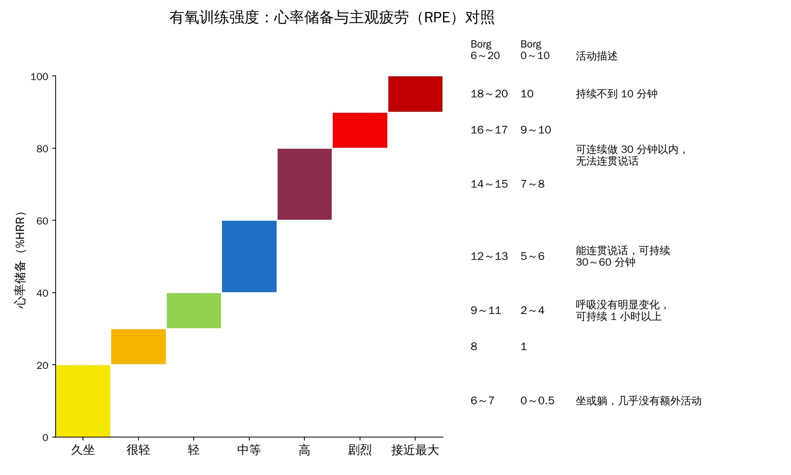
🔖原文图 5 有氧强度：心率储备与 Borg 主观疲劳对照（中文重绘）
有氧可以看心率，也可以直接用 Borg 量表问自己累不累。想提升心肺耐力，持续运动要到心率储备 70% 以上（Borg 14～15，说话断断续续）；做高强度间歇则要到 85% 以上（Borg 17 左右），时间更省。
表 5 各部分的强度和进阶原则
| 部分 | 原则 |
|---|---|
| 热身 | 心率储备 60% 以下，Borg 9～13，能正常聊天 |
| 久坐工作 | 有氧项目随意选，每项至少 10 分钟；心率储备 70%～80%（Borg 14～15，说话断断续续）；20 分钟连续进行不休息 |
| 站立/走动工作 | 心率储备 85%～95%（Borg 17～19，坚持不了几分钟）；做间歇，练休比 1∶2，如练 30 秒歇 60 秒，或练 20 秒歇 40 秒 |
| 重体力工作 | 3 组 × 15～20 次，60% 1RM；顺序随意，建议超级组或循环 |
| 有氧训练 | 持续或间歇按个人喜好：持续为心率储备 70%～80%，全程不停；间歇为 85%～95% 最大心率，练休比 1∶2 |
| 专项力量 | 按目录顺序优先，可按喜好或不适调整；65%～80% 1RM，轻松完成就加量或加难度；多数动作可换不同颜色的弹力带调阻力；建议超级组或循环 |
| 功能训练 | 按目录顺序优先，可调整；每个动作约 5 分钟，做 3～4 次 × 30 秒，间歇 30 秒；难度调到要用点力才能完成 |
原文附录列了每类训练的推荐动作，大部分只要一根弹力带就能做，办公室、车间都能练。按顺序排在前面的优先做。
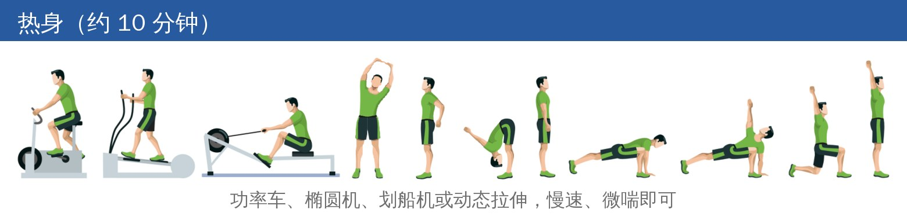
🔖热身动作
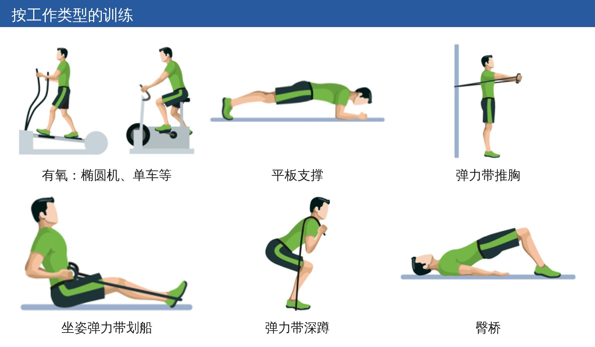
🔖按工作类型的训练
久坐和站立/走动工作的有氧可以选单车、跑步、跳绳、交叉训练或划船；站立/走动工作再加平板支撑。重体力工作做弹力带推胸（背对固定点向前推）、坐姿划船（弹力带套脚、往回拉到躯干）、弹力带深蹲（至少蹲到屈膝 90°，背挺直）和臀桥。
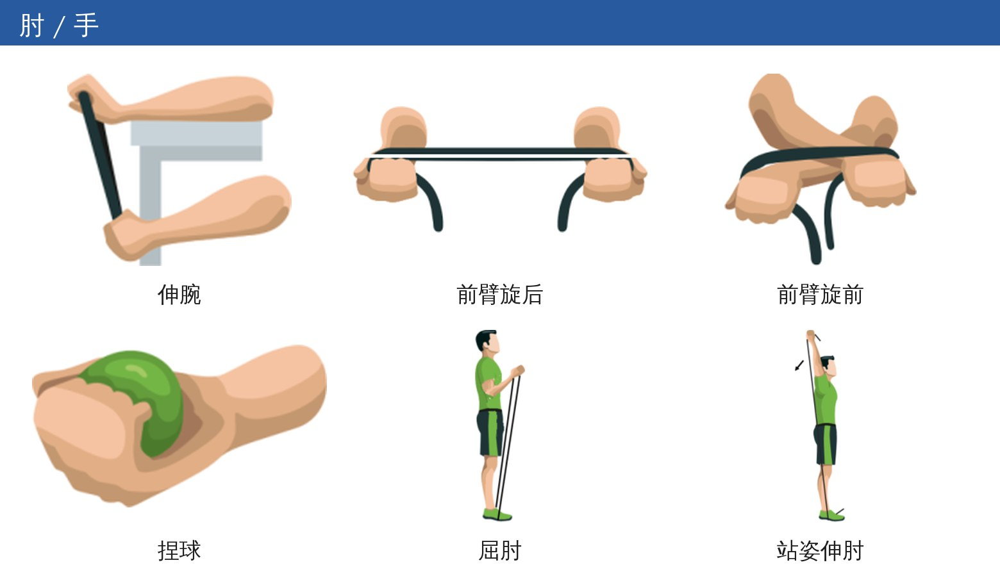
🔖肘 / 手
伸腕（前臂放桌上、手腕悬出桌沿，对抗弹力带抬手）；前臂旋后、旋前（屈肘 90° 贴身，拉开弹力带同时翻转前臂）；捏球（握软球，捏紧停 1 秒再放松）；屈肘（踩住弹力带，屈肘同时拇指外旋）；站姿伸肘（手臂举过头，另一手稳住肘部，向上伸直）。
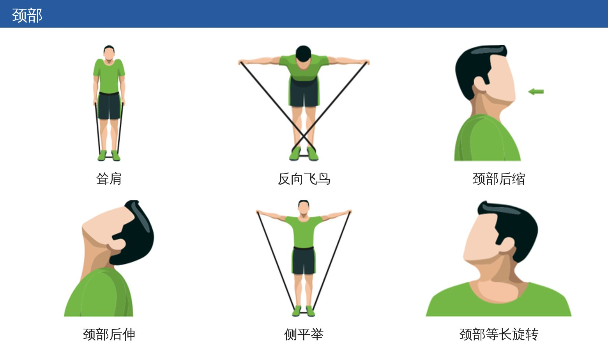
🔖颈部
耸肩、反向飞鸟（俯身直背，直臂侧平举到水平）；颈部后缩（收下巴做出“双下巴”，手在后脑加阻力）；颈部后伸（收下巴后尽量仰头，停 1～2 秒）；侧平举；颈部等长旋转（手掌贴脸颊，头和手轻轻对抗，保持几秒，头颈不要动）。
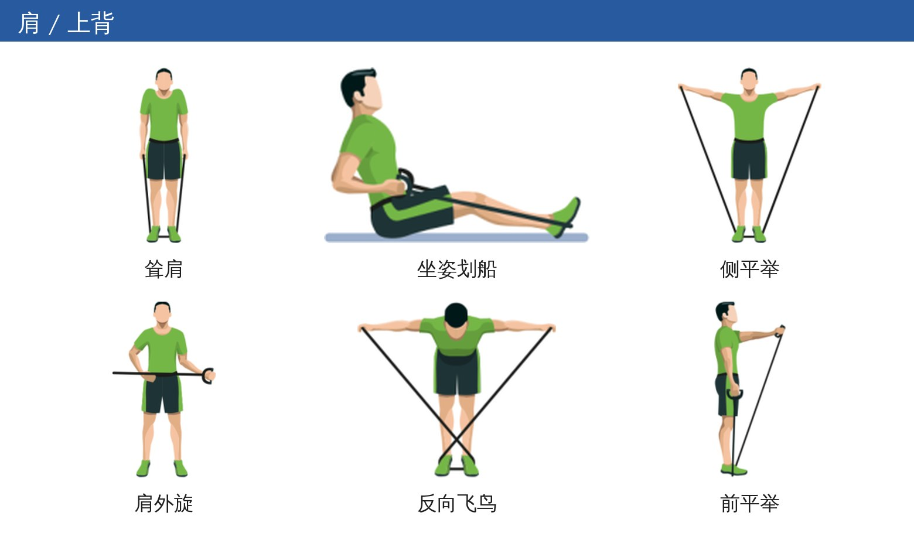
🔖肩 / 上背
耸肩、坐姿划船、侧平举、反向飞鸟、前平举（两手交替举到肩高），以及肩外旋（弹力带固定在肚脐高度，屈肘 90° 贴身，水平向外转到底）。
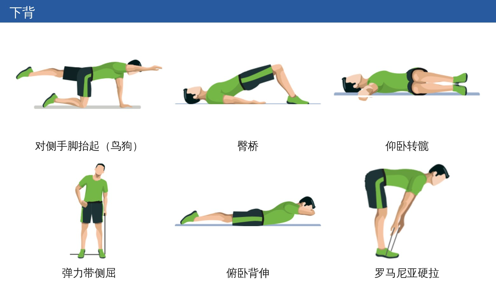
🔖下背
鸟狗式（四点跪位，对侧手脚同时伸平，躯干不晃）；臀桥；仰卧转髋（屈膝，双膝一起倒向一侧再换边）；弹力带侧屈；俯卧背伸（夹臀，上身抬离地面）；罗马尼亚硬拉（直背屈髋到大腿后侧有牵拉感，再站直）。
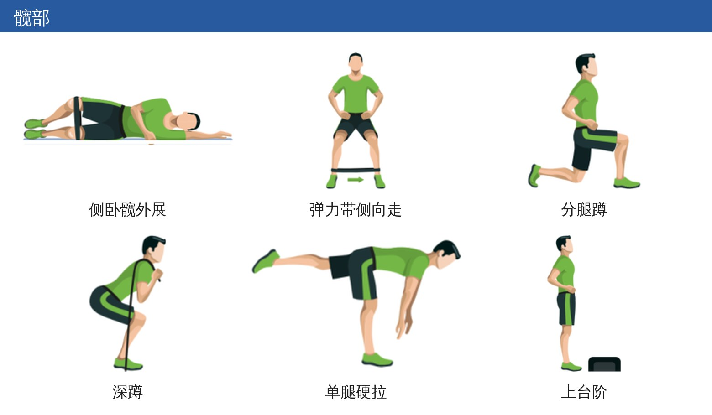
🔖髋部
侧卧髋外展（弹力带套在膝上方）；侧向走（弹力带套脚踝，最好脚尖稍内扣，全程保持张力）；分腿蹲（后膝下到接近地面）；深蹲；单腿硬拉（上身前倾、后腿抬起，身体成一条水平线）；上台阶（下台阶时用工作腿控制下降）。
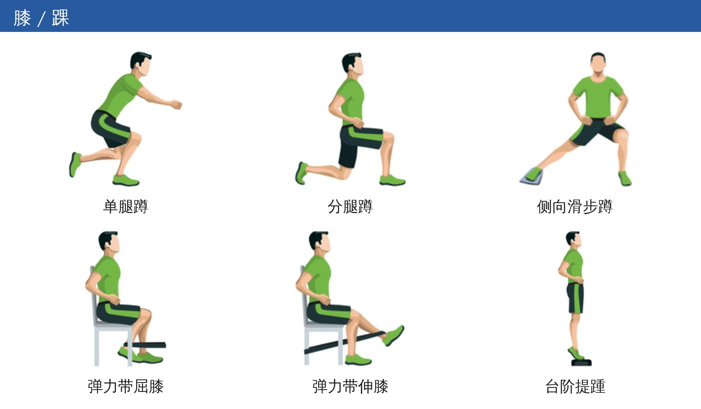
🔖膝 / 踝
单腿蹲（屈膝 90°，背挺直）；分腿蹲；侧向滑步蹲（一只脚穿袜子或踩毛巾，向侧滑出，另一侧屈膝）；弹力带屈膝（坐位，把脚往椅子下拉）；弹力带伸膝；台阶提踵（脚跟悬空，踮到脚尖再落下）。
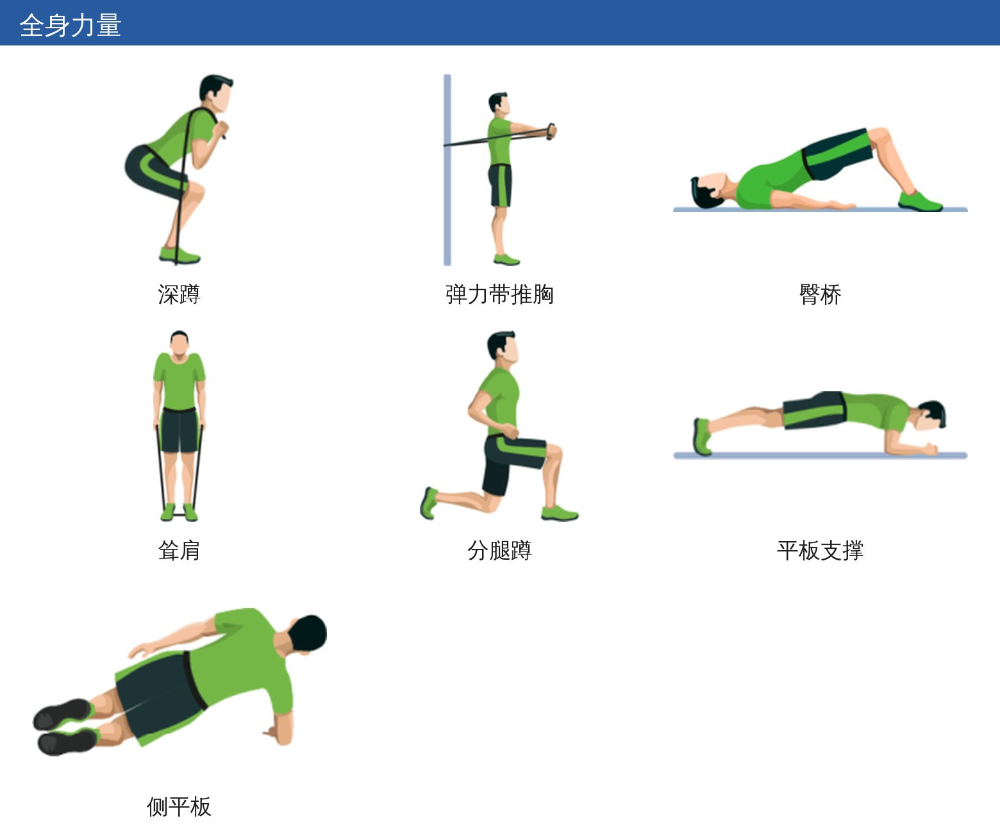
🔖全身力量
久坐和站立/走动工作：深蹲、推胸、臀桥、耸肩。重体力工作：分腿蹲、平板支撑、耸肩、侧平板。
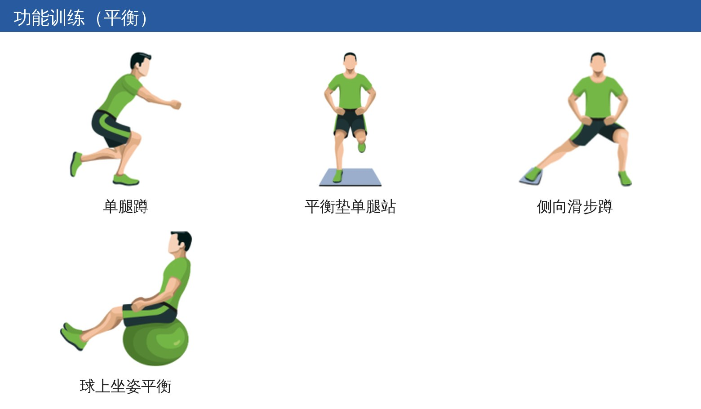
🔖功能训练（平衡）
单腿蹲、平衡垫（或折叠的垫子）上单腿站、侧向滑步蹲，以及坐在球上抬脚保持平衡。
作者反复提到一个数字：出勤率 70%。达到这个门槛，才更可能看到有意义的效果，很多研究也以此作为“按方案完成”的标准。
• 1 小时可以一次练完，也可以拆成 6 × 10 分钟、5 × 12 分钟或 3 × 20 分钟，只要总量和强度够，效果差不多
• 有没有教练带都行，前提是一开始教清楚
• 和同事一起在单位练，坚持率明显高于自己在家练
• 最大的障碍是“没时间、排不上”。直属领导支持、把训练变成日常工作流程的一部分，比靠个人自觉管用
• 可以培养“健康大使”带动大家；有人需要的话，可以加上认知行为方面的支持
• 丹麦的研究里，占用工作时间训练并没有降低生产效率；出勤率 70% 以上的办公室员工，效率损失和病假都减少。澳大利亚、瑞士的研究也看到了颈痛相关的效率改善，瑞士研究估算每人每周节省 27.4 瑞士法郎
作者也提醒，除了 IPET 这 1 小时，每个人还是应该尽量达到 WHO 推荐的每周 150 分钟中等强度或 75 分钟高强度活动。
• 这是方案开发者对自家方案的介绍，不是系统综述。“20 多项 RCT、4000 多人”没有给出研究清单和效应量，读者无法自己判断证据强度。作者自己也承认，这个概念还很新，证据仍有限，需要系统综述和荟萃分析来验证
• 作者是方案的开发团队，却声明无利益冲突；文中对效果的描述以正面为主
• 每周 1 小时低于 WHO 推荐量，作者把它“视为相当于高强度活动”，但 60 分钟也没到 75 分钟的高强度标准
• 切点主要来自丹麦人群，直接用于国内人群需要调整
• 前后数据有几处对不上：图 4 写的是最大心率，表 5 同样的强度却写成心率储备；热身在正文说是最大心率 60%，表 5 说心率储备 60%；表 2 说疼痛超过“两（三）个部位”时排序，算法部分又说最多 3 个部位；体脂率女性年龄分组写成“50～99”，和 40～59 岁重叠；附录里站立/走动工作的间歇是 15 分钟，而方案规定的是 20 分钟
• 血糖低于 4 mmol/L 也分配有氧训练，从临床上看不太合理，低血糖的人更需要先查原因
• 力量进阶表第 13 周和第 12 周完全一样，第 14 周又退回 2 组，原文没有解释是否为减量周
这套方案最值得借鉴的不是哪个具体动作，而是思路：先看工作类型，再看个人短板，按评估结果分配有限的训练时间。它把“多运动”拆成了能执行的东西——问几个问题、测几个指标、查一张表，就能给出一份每周 1 小时的计划。
对康复治疗师来说，接诊颈肩腰痛的上班族时，可以参考这套评估和切点，快速判断该加有氧还是加某个部位的力量；给企业做健康项目，也可以直接借用它的结构和动作库。只是要记得，这套方案的证据主要来自作者团队自己，切点也需要本地化。
欢迎关注悦美力公众号，获取更多物理治疗的专业知识！
📄参考文献：
Sjøgaard G, Søgaard K, Hansen AF, Østergaard AS, Teljigovic S, Dalager T. Exercise Prescription for the Work–Life Population and Beyond. J Funct Morphol Kinesiol. 2023;8(2):73. doi:10.3390/jfmk8020073
原文以 CC BY 4.0 协议开放获取。图 1～5 按原文结构中文重绘，动作插图来自原文附表 A1（已去除英文文字），仅用于学术交流。